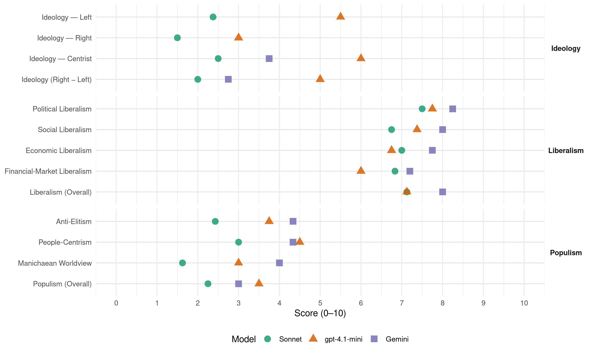

PC (Uruguay, 2014)
manifesto_id 162410_201410
Get full text: This site shows derived annotations and short verbatim quotes only. The full manifesto text is © Manifesto Project / WZB — obtain it via manifesto-project.wzb.eu using the manifesto_id above.
Headline scores
| Dimension | Sonnet | gpt-4.1-mini | Gemini |
|---|---|---|---|
| Populism (Overall) | 2.2 | 3.5 | 3.0 |
| Anti-Elitism | 2.4 | 3.8 | 4.3 |
| People-Centrism | 3.0 | 4.5 | 4.3 |
| Manichaean Worldview | 1.6 | 3.0 | 4.0 |
| Ideology (Right − Left) | 2.0 | 5.0 | 2.8 |
| Liberalism (Overall) | 7.1 | 7.1 | 8.0 |
| Political Liberalism | 7.5 | 7.8 | 8.2 |
| Social Liberalism | 6.8 | 7.4 | 8.0 |
| Economic Liberalism | 7.0 | 6.8 | 7.8 |
| Financial-Market Liberalism | 6.8 | 6.0 | 7.2 |
Evidence per dimension
Economic Liberalism
Gemini · score 7.0 · verified · chunk 1
“fomento de exoneraciones a las empresas”
coordinará con medidas de fomento de exoneraciones a las empresas que acepten dicho régimen de capacitación y trabajo
Gemini · score 7.0 · verified · chunk 2
“apoyando las pequeñas y medianas empresas”
propicie el Emprendedurismo, en particular en sectores más vulnerables. Se desarrollarán iniciativas en estos sectores reduciendo la carga impositiva de los mismos, apoyando las pequeñas y medianas empresas a través de exoneraciones de cargas tributarias
Gemini · score 7.0 · verified · chunk 3
“fomentar con seriedad el libre comercio”
plano internacional para fomentar con seriedad el libre comercio, el cumplimiento de los acuerdos
Gemini · score 9.0 · verified · chunk 4
“respetando la propiedad privada, las reglas que rigen el estado de derecho y el libre mercado”
establecer un marco de certidumbre y estabilidad macroeconómica, estimulando la inversión, respetando la propiedad privada, las reglas que rigen el estado de derecho y el libre mercado.
Gemini · score 9.0 · verified · chunk 5
“estado de derecho y el libre mercado”
propiedad privada, las reglas que rigen el estado de derecho y el libre mercado. Mejorar la institucionalidad aumentando la profesionalidad
Gemini · score 8.0 · verified · chunk 6
“economía de competencia sea transparente”
muy fuerte para que la economía de competencia sea transparente y no se ampare en los mil
Gemini · score 8.0 · verified · chunk 7
“Libre competencia y vigilancia contra abusos de posición dominante”
gobierno abierto, instrumentos de medida y rendición de cuentas. Libre competencia y vigilancia contra abusos de posición dominante. Cultura de servicio público con responsabilidad
Gemini · score 7.0 · verified · chunk 8
“mejorar la competitividad del país”
En definitiva, es necesario mejorar la competitividad del país, cualquiera sea el rumbo que se le imprima a la política comercial.
gpt-4.1-mini · score 6.0 · verified · chunk 1
“trabajo digno y del esfuerzo personal que motive la realización por medio del mérito propio”
Un Uruguay que promueva y fomente la movilidad social ascendente, a través del trabajo digno y del esfuerzo personal que motive la realización por medio del mérito propio. La educación, en este marco, la concebimos como herramienta fundamental, que acompañada de las políticas sectoriales, para generar las oportunidades necesarias a través de una formación integral, de calidad, pertinente, inclusiva y para toda la vida.
gpt-4.1-mini · score 6.0 · verified · chunk 2
“reducción de la carga impositiva de los mismos, apoyando las pequeñas y medianas empresas”
Se desarrollarán iniciativas en estos sectores reduciendo la carga impositiva de los mismos, apoyando las pequeñas y medianas empresas a través de exoneraciones de cargas tributarias y del costo de los servicios prestados por entes nacionales, por empresas públicas y por entes paraestatales; así como también a nivel departamental.
gpt-4.1-mini · score 6.0 · verified · chunk 3
“promover la formación de empresarios y trabajadores con un nuevo enfoque”
Promover la formación de empresarios y trabajadores con un nuevo enfoque en los programas de capacitación (más accesibles y más vinculados con el mundo real laboral), para lo cual se deberá profesionalizar los ámbitos de competencia y actividades que desarrolla el INEFOP, entre otras acciones.
gpt-4.1-mini · score 7.0 · verified · chunk 4
“mantener reglas de juego estables y transparentes, que permitan un desarrollo sostenible y competitivo”
• Mantener reglas de juego estables y transparentes, que permitan un desarrollo sostenible y competitivo de la economía, para bienestar de todos sus habitantes • Alcanzar un uso eficiente de los recursos • Lograr una amplia integración energética regional, acompañada de una adecuada inserción en los mercados energéticos internacionales • Respetar una debida preservación y sustentabilidad ambiental.
gpt-4.1-mini · score 8.0 · verified · chunk 5
“establecer un marco de certidumbre, de estabilidad macroeconómica, estimulando la inversión, respetando la propiedad privada, las reglas que rigen el estado de derecho y el libre mercado”
Crear las mejores condiciones para un desarrollo inmobiliario que maximice la calidad de vida respetando la sustentabilidad ambiental. Establecer un marco de certidumbre, de estabilidad macroeconómica, estimulando la inversión, respetando la propiedad privada, las reglas que rigen el estado de derecho y el libre mercado. Generar un ámbito de planeamiento estratégico enfocado a promover y pensar el mercado inmobiliario sin perjuicio de las debidas competencias del Ministerio de Vivienda y Medio Ambiente y de las Intendencias.
gpt-4.1-mini · score 7.0 · verified · chunk 6
“economía social de mercado”
El fortalecimiento de las entidades reguladoras es el único mecanismo para apuntar hacia una economía social de mercado. Es uno de los principales resortes distributivos del mundo desarrollado.
gpt-4.1-mini · score 7.0 · verified · chunk 7
“la economía tendrá como objetivo final maximizar el desarrollo humano de su población. Apuntaremos a un Uruguay próspero, con mayor y mejor integración al mundo, con estabilidad macroeconómica y niveles de competitividad”
El tercer pilar de nuestro gobierno será la Economía. La economía tendrá como objetivo final maximizar el desarrollo humano de su población. Apuntaremos a un Uruguay próspero, con mayor y mejor integración al mundo, con estabilidad macroeconómica y niveles de competitividad, para lograr mejor ocupación y un crecimiento generalizado de todos los sectores.
gpt-4.1-mini · score 7.0 · verified · chunk 8
“mejorar la competitividad del país, cualquiera sea el rumbo que se le imprima a la política comercial”
En definitiva, es necesario mejorar la competitividad del país, cualquiera sea el rumbo que se le imprima a la política comercial. América Latina, y el Uruguay con ella, ya cayó a la lejana zaga de los miembros de la OECD, y ahora hay muchos países asiáticos y del Medio Oriente que nos superan. En nuestro continente, sólo Chile ha sabido ponerse a tono con el mundo moderno, en el que la eficiencia es la clave del éxito.
Sonnet · score 6.0 · verified · chunk 1
“exoneraciones a las empresas que acepten dicho régimen”
se coordinará con medidas de fomento de exoneraciones a las empresas que acepten dicho régimen de capacitación y trabajo
Sonnet · score 6.0 · verified · chunk 2
“reduciendo la carga impositiva de los mismos”
Impulsar emprendimientos productivos…reduciendo la carga impositiva de los mismos, apoyando las pequeñas y medianas empresas a través de exoneraciones de cargas tributarias
Sonnet · score 7.0 · verified · chunk 3
“rechazo de toda forma de proteccionismo”
fomentar con seriedad el libre comercio, el cumplimiento de los acuerdos internacionales de los que forma parte nuestro país, el rechazo de toda forma de proteccionismo
Sonnet · score 8.0 · verified · chunk 4
“respetar la propiedad privada, las reglas que rigen el estado de derecho y el libre mercado”
Establecer un marco de certidumbre y estabilidad macroeconómica, estimulando la inversión, respetando la propiedad privada, las reglas que rigen el estado de derecho y el libre mercado
Sonnet · score 7.0 · verified · chunk 5
“respetando la propiedad privada, las reglas que rigen el estado de derecho y el libre mercado”
Establecer un marco de certidumbre, de estabilidad macroeconómica, estimulando la inversión, respetando la propiedad privada, las reglas que rigen el estado de derecho y el libre mercado
Sonnet · score 7.0 · verified · chunk 6
“economía de competencia sea transparente”
muy fuerte para que la economía de competencia sea transparente y no se ampare en los mil mecanismos que existen para hacerla opaca
Sonnet · score 7.0 · verified · chunk 7
“Libre competencia y vigilancia contra abusos”
Libre competencia y vigilancia contra abusos de posición dominante. Cultura de servicio público con responsabilidad por cumplimiento de metas
Sonnet · score 8.0 · verified · chunk 8
“mejorar la competitividad del país”
es necesario mejorar la competitividad del país, cualquiera sea el rumbo que se le imprima a la política comercial
Financial-Market Liberalism
Gemini · score 6.0 · verified · chunk 3
“acceder a líneas de crédito especiales”
mecanismos que permitan acceder a líneas de crédito especiales para este tipo de sociedades.
Gemini · score 8.0 · verified · chunk 4
“desarrollar, considerando las características especiales de nuestro país, un mercado de capitales”
desarrollar una política fiscal, monetaria y cambiaria que asegure la estabilidad y la competitividad del empleo y la producción agropecuaria nacional. Replicar el modelo agroindustrial de la forestación y derivados buscando promover cadenas que generen productos con posibilidades de inserción en mercados externos, priorizando su instalación en zonas con menores niveles de desarrollo. Desarrollar, considerando las características especiales de nuestro país, un mercado de capitales que otorgue opciones al productor rural para acceder a capitales de riesgo y poder operar en mercados de futuros.
Gemini · score 8.0 · verified · chunk 5
“análisis estratégico de la Unidad de Inteligencia y Análisis Financiero”
de una estrategia de comunicación; del análisis estratégico de la Unidad de Inteligencia y Análisis Financiero; de la creación de unidades especiales de
Gemini · score 7.0 · verified · chunk 6
“a excepción del Banco Central”
unidades reguladoras en nuestro país –a excepción del Banco Central-no tienen una real independencia del
Gemini · score 7.0 · verified · chunk 7
“regular la inversión privada e incentivar la inversión popular”
en función de sus conocimientos y capacidades en la materia regulatoria o en las áreas específicas objeto de la regulación. Regular la inversión privada e incentivar la inversión popular en las empresas públicas
gpt-4.1-mini · score 6.0 · verified · chunk 6
“transparencia en cuanto a su utilización”
Deberá legislarse sobre el correcto empleo de estos dispositivos, la transparencia en cuanto a su utilización, el habeas data para el usuario y la potestad parlamentaria de inspección e investigación de los sistemas por ANTEL.
Sonnet · score 6.0 · verified · chunk 2
“préstamos hipotecarios”
subsidios directos a las familias, para la adquisición de viviendas…así como también para el pago de las cuotas resultantes de los respectivos préstamos hipotecarios
Sonnet · score 7.0 · verified · chunk 3
“desarrollar el mercado financiero”
Mejorar los demás aspectos que hacen a la competitividad (infraestructura, mejora educativa, sofisticación de los negocios, incorporación de tecnología, eficiencia de los mercados, mejorar la cadena logística, desarrollar el mercado financiero, etc.)
Sonnet · score 8.0 · verified · chunk 4
“financiamiento a través de mercados de valores internacionales”
dotándola de transparencia tal que además facilite la utilización de mecanismos de financiamiento a través de mercados de valores internacionales
Sonnet · score 7.0 · verified · chunk 5
“sistema financiero”
Se promoverá la participación de representantes de todos los sectores involucrados (inversores, empresas constructoras, agentes inmobiliarios, sistema financiero, etc.), conjuntamente con el Estado
Sonnet · score 6.0 · verified · chunk 6
“Comisión de Promoción y Defensa de la Competencia”
la Comisión de Promoción y Defensa de la Competencia (3 miembros), son todos ellos, los 14, nombrados por el Poder Ejecutivo
Sonnet · score 7.0 · verified · chunk 7
“seguridad jurídica para los usuarios e inversores”
Otorgar un marco de seguridad jurídica para los usuarios e inversores. Promover una inversión eficiente en materia de infraestructuras
Political Liberalism
Gemini · score 8.0 · verified · chunk 1
“autonomía de organización, gestión, enseñanza”
SUN estará regulado por un régimen que asegure la autonomía de organización, gestión, enseñanza e investigación, dentro de un marco reglamentario
Gemini · score 8.0 · verified · chunk 2
“asuntos culturales son decisivos en una democracia”
los asuntos culturales son decisivos en una democracia, siendo una base esencial de la convivencia social
Gemini · score 8.0 · verified · chunk 3
“garantías que brinda el sistema democrático”
plenamente al amparo de las garantías que brinda el sistema democrático republicano de gobierno.
Gemini · score 8.0 · verified · chunk 4
“principios básicos que rigen el estado de derecho”
respetar la propiedad privada y reafirmar los principios básicos que rigen el estado de derecho. Se ha incrementado, en los últimos diez
Gemini · score 9.0 · verified · chunk 5
“respeto irrestricto a la independencia del Poder Judicial”
la separación de poderes y el respeto irrestricto a la independencia del Poder Judicial; El fortalecimiento del Poder Judicial
Gemini · score 9.0 · verified · chunk 6
“independencia de los órganos de control”
Objetivo estratégico 3: Aprobar un nuevo marco legal que garantice la independencia de los órganos de control.
Gemini · score 8.0 · verified · chunk 7
“promueva el fortalecimiento de la democracia, que propicie la participación de los ciudadanos”
consolidar un Estado moderno que promueva el fortalecimiento de la democracia, que propicie la participación de los ciudadanos, garantice el ejercicio de las libertades
Gemini · score 8.0 · verified · chunk 8
“encargo central del Estado de Derecho”
Partido Colorado define como el encargo central del Estado de Derecho y del gobierno democrático.
gpt-4.1-mini · score 8.0 · verified · chunk 1
“derecho a vivir en paz de acuerdo con las especificaciones del Pacto de San José de Costa Rica”
El derecho a una óptima calidad de vida como objetivo central del proceso de desarrollo El derecho a vivir en paz de acuerdo con las especificaciones del Pacto de San José de Costa Rica El derecho a la educación, haciendo efectiva la igualdad de oportunidades y de resultados El derecho a la salud en su dimensión de completo estado de bienestar físico, psíquico y social y no sólo a la ausencia de enfermedad El derecho al trabajo y a un ingreso digno y suficiente, en el marco de políticas sociales desarrolladas al efecto.
gpt-4.1-mini · score 7.0 · verified · chunk 2
“la rectoría del sistema es función clave del MSP”
La rectoría del sistema es función clave del MSP y la misma comprende funciones de conducción, regulación, adecuación del modelo de financiamiento adecuación de la provisión de servicios, asegurando para la población una atención médica accesible, universal, eficiente, efectiva, y oportuna.
gpt-4.1-mini · score 7.0 · verified · chunk 3
“diversas normas constitucionales establecen que el derecho al trabajo es uno de los derechos fundamentales”
1) El trabajo: Derecho – Deber. Diversas normas constitucionales establecen que el derecho al trabajo es uno de los derechos fundamentales del individuo. De él depende su nivel de vida. Es también uno de los principales factores de realización personal y de integración del individuo adulto a la sociedad.
gpt-4.1-mini · score 7.0 · verified · chunk 4
“un adecuado clima de inversión, lo cual implica seguridad jurídica”
Naturalmente, para poder contar con el capital privado debe generarse y mantenerse un adecuado clima de inversión, lo cual implica seguridad jurídica, adecuado ambiente en las relaciones laborales, previsibilidad fiscal, estabilidad macroeconómica, etc., etc. • Una reforma profunda del sector Transporte, principal demandante de los derivados del petróleo, que deberá contener:
gpt-4.1-mini · score 9.0 · verified · chunk 5
“la defensa de la separación de poderes y el respeto irrestricto a la independencia del Poder Judicial”
Consideramos que se deben defender y concretar posiciones, proyectos e iniciativas sobre la base de: La defensa de la separación de poderes y el respeto irrestricto a la independencia del Poder Judicial; El fortalecimiento del Poder Judicial como poder del Estado garante de la aplicación de la ley de forma imparcial que dirime los conflictos entre los particulares y en general, en un marco su tecnificación y desarrollo; El fortalecimiento del TCA como forma de proteger a los ciudadanos del accionar arbitrario del Estado;
gpt-4.1-mini · score 8.0 · verified · chunk 6
“Defender la libertad de prensa y de los medios de comunicación”
Objetivo estratégico 14: Defender la libertad de prensa y de los medios de comunicación en toda su extensión imaginable. Aprobar una ley sobre “neutralidad en la red” -libertad de acceso, no discriminación, ni censura, ni restricciones o privilegios-.
gpt-4.1-mini · score 8.0 · verified · chunk 7
“fortalecimiento de la democracia, que propicie la participación de los ciudadanos, garantice el ejercicio de las libertades”
Necesitamos un Estado eficiente, eficaz, descentralizado, transparente y que tenga como centro y foco de atención al ciudadano. Trabajaremos para consolidar un Estado moderno que promueva el fortalecimiento de la democracia, que propicie la participación de los ciudadanos, garantice el ejercicio de las libertades y que contribuya a una distribución equitativa de los ingresos.
gpt-4.1-mini · score 8.0 · verified · chunk 8
“Derechos Humanos y su efectiva protección ocupan un lugar prioritario”
Temas que por su importancia serán objeto de atención preferencial en la acción del gobierno: a) Derechos Humanos El Partido Colorado concibe la sociedad como una comunidad de personas li-bres—verdadero centro del sistema de convivencia, con similares expectativas de desarrollo personal, a las cuales el Estado, como gran articulador de las inevitables diferencias que se producen en su seno, deberá proveer las herramientas adecuadas para garantizar sus derechos e incentivar sus expectativas. Dentro de ese cuadro, los Derechos Humanos y su efectiva protección ocupan un lugar prioritario al que el Partido Colorado define como el encargo central del Estado de Derecho y del gobierno democrático.
Sonnet · score 7.0 · verified · chunk 1
“devolver a los representantes del gobierno la conducción”
aprobando el proyecto de ley presentado ante el Parlamento Nacional…de forma de devolver a los representantes del gobierno la conducción de la educación nacional
Sonnet · score 7.0 · verified · chunk 2
“Los asuntos culturales son decisivos en una democracia”
Los asuntos culturales son decisivos en una democracia, siendo una base esencial de la convivencia social
Sonnet · score 7.0 · verified · chunk 3
“sistema democrático republicano de gobierno”
Esta sólo se desarrolla plenamente al amparo de las garantías que brinda el sistema democrático republicano de gobierno.
Sonnet · score 7.0 · verified · chunk 4
“controles constitucionalmente consagrados”
Una clara distribución orgánica que, sin perjuicio de los controles constitucionalmente consagrados, evite la superposición de funciones de cada una de las entidades estatales intervinientes
Sonnet · score 8.0 · verified · chunk 5
“defensa de la separación de poderes”
La defensa de la separación de poderes y el respeto irrestricto a la independencia del Poder Judicial; El fortalecimiento del Poder Judicial como poder del Estado garante de la aplicación de la ley
Sonnet · score 8.0 · verified · chunk 6
“independencia de los órganos de control”
Objetivo estratégico 3: Aprobar un nuevo marco legal que garantice la independencia de los órganos de control. En Uruguay muchos órganos de control dependen absurdamente del Poder Ejecutivo
Sonnet · score 8.0 · verified · chunk 7
“fortalecimiento de la democracia”
Trabajaremos para consolidar un Estado moderno que promueva el fortalecimiento de la democracia, que propicie la participación de los ciudadanos, garantice el ejercicio de las libertades
Sonnet · score 8.0 · verified · chunk 8
“promoción de la democracia y los Derechos Humanos”
Uruguay debe posicionarse por la reafirmación de la paz, la defensa ante las amenazas globales, la promoción de la democracia y los Derechos Humanos
Liberalism (Overall)
Gemini · score 8.0 · verified · chunk 1
“autonomía de organización, gestión, enseñanza”
SUN estará regulado por un régimen que asegure la autonomía de organización, gestión, enseñanza e investigación, dentro de un marco reglamentario
Gemini · score 8.0 · verified · chunk 2
“asuntos culturales son decisivos en una democracia”
los asuntos culturales son decisivos en una democracia, siendo una base esencial de la convivencia social
Gemini · score 7.0 · verified · chunk 3
“garantías que brinda el sistema democrático”
plenamente al amparo de las garantías que brinda el sistema democrático republicano de gobierno.
Gemini · score 8.0 · verified · chunk 4
“respetando la propiedad privada, las reglas que rigen el estado de derecho y el libre mercado”
establecer un marco de certidumbre y estabilidad macroeconómica, estimulando la inversión, respetando la propiedad privada, las reglas que rigen el estado de derecho y el libre mercado.
Gemini · score 9.0 · verified · chunk 5
“estado de derecho y el libre mercado”
propiedad privada, las reglas que rigen el estado de derecho y el libre mercado. Mejorar la institucionalidad aumentando la profesionalidad
Gemini · score 8.0 · verified · chunk 6
“independencia de los órganos de control”
Objetivo estratégico 3: Aprobar un nuevo marco legal que garantice la independencia de los órganos de control.
Gemini · score 8.0 · verified · chunk 7
“promueva el fortalecimiento de la democracia, que propicie la participación de los ciudadanos”
consolidar un Estado moderno que promueva el fortalecimiento de la democracia, que propicie la participación de los ciudadanos, garantice el ejercicio de las libertades
Gemini · score 8.0 · verified · chunk 8
“encargo central del Estado de Derecho”
Partido Colorado define como el encargo central del Estado de Derecho y del gobierno democrático.
gpt-4.1-mini · score 6.0 · verified · chunk 1
“derecho a vivir en paz de acuerdo con las especificaciones del Pacto de San José de Costa Rica”
El derecho a una óptima calidad de vida como objetivo central del proceso de desarrollo El derecho a vivir en paz de acuerdo con las especificaciones del Pacto de San José de Costa Rica El derecho a la educación, haciendo efectiva la igualdad de oportunidades y de resultados El derecho a la salud en su dimensión de completo estado de bienestar físico, psíquico y social y no sólo a la ausencia de enfermedad El derecho al trabajo y a un ingreso digno y suficiente, en el marco de políticas sociales desarrolladas al efecto.
gpt-4.1-mini · score 7.0 · verified · chunk 2
“la rectoría del sistema es función clave del MSP”
La rectoría del sistema es función clave del MSP y la misma comprende funciones de conducción, regulación, adecuación del modelo de financiamiento adecuación de la provisión de servicios, asegurando para la población una atención médica accesible, universal, eficiente, efectiva, y oportuna.
gpt-4.1-mini · score 7.0 · verified · chunk 3
“diversas normas constitucionales establecen que el derecho al trabajo es uno de los derechos fundamentales”
1) El trabajo: Derecho – Deber. Diversas normas constitucionales establecen que el derecho al trabajo es uno de los derechos fundamentales del individuo. De él depende su nivel de vida. Es también uno de los principales factores de realización personal y de integración del individuo adulto a la sociedad.
gpt-4.1-mini · score 7.0 · verified · chunk 4
“un adecuado clima de inversión, lo cual implica seguridad jurídica”
Naturalmente, para poder contar con el capital privado debe generarse y mantenerse un adecuado clima de inversión, lo cual implica seguridad jurídica, adecuado ambiente en las relaciones laborales, previsibilidad fiscal, estabilidad macroeconómica, etc., etc. • Una reforma profunda del sector Transporte, principal demandante de los derivados del petróleo, que deberá contener:
gpt-4.1-mini · score 8.0 · verified · chunk 5
“la defensa de la separación de poderes y el respeto irrestricto a la independencia del Poder Judicial”
Consideramos que se deben defender y concretar posiciones, proyectos e iniciativas sobre la base de: La defensa de la separación de poderes y el respeto irrestricto a la independencia del Poder Judicial; El fortalecimiento del Poder Judicial como poder del Estado garante de la aplicación de la ley de forma imparcial que dirime los conflictos entre los particulares y en general, en un marco su tecnificación y desarrollo; El fortalecimiento del TCA como forma de proteger a los ciudadanos del accionar arbitrario del Estado;
gpt-4.1-mini · score 7.0 · verified · chunk 6
“Defender la libertad de prensa y de los medios de comunicación”
Objetivo estratégico 14: Defender la libertad de prensa y de los medios de comunicación en toda su extensión imaginable. Aprobar una ley sobre “neutralidad en la red” -libertad de acceso, no discriminación, ni censura, ni restricciones o privilegios-.
gpt-4.1-mini · score 8.0 · verified · chunk 7
“fortalecimiento de la democracia, que propicie la participación de los ciudadanos, garantice el ejercicio de las libertades”
Necesitamos un Estado eficiente, eficaz, descentralizado, transparente y que tenga como centro y foco de atención al ciudadano. Trabajaremos para consolidar un Estado moderno que promueva el fortalecimiento de la democracia, que propicie la participación de los ciudadanos, garantice el ejercicio de las libertades y que contribuya a una distribución equitativa de los ingresos.
gpt-4.1-mini · score 7.0 · verified · chunk 8
“mejorar la competitividad del país, cualquiera sea el rumbo que se le imprima a la política comercial”
En definitiva, es necesario mejorar la competitividad del país, cualquiera sea el rumbo que se le imprima a la política comercial. América Latina, y el Uruguay con ella, ya cayó a la lejana zaga de los miembros de la OECD, y ahora hay muchos países asiáticos y del Medio Oriente que nos superan. En nuestro continente, sólo Chile ha sabido ponerse a tono con el mundo moderno, en el que la eficiencia es la clave del éxito.
Sonnet · score 6.0 · verified · chunk 1
“la igualdad de género, la no discriminación, los derechos humanos”
publicaciones impresas y/o digitales que fomenten…temáticas de importancia como ser…la igualdad de género…la no discriminación, los derechos humanos, los valores
Sonnet · score 7.0 · verified · chunk 2
“Estado de Derecho, por el cumplimiento estricto del derecho fundamental”
la esfera de lo público tiene el deber de velar, con todos los instrumentos jurídicos y políticos con los que cuenta el Estado de Derecho, por el cumplimiento estricto del derecho fundamental
Sonnet · score 7.0 · verified · chunk 3
“libre comercio, el cumplimiento de los acuerdos internacionales”
fomentar con seriedad el libre comercio, el cumplimiento de los acuerdos internacionales de los que forma parte nuestro país
Sonnet · score 7.0 · verified · chunk 4
“respetar la propiedad privada, las reglas que rigen el estado de derecho y el libre mercado”
Establecer un marco de certidumbre y estabilidad macroeconómica, estimulando la inversión, respetando la propiedad privada, las reglas que rigen el estado de derecho y el libre mercado
Sonnet · score 7.0 · verified · chunk 5
“respetando la propiedad privada, las reglas que rigen el estado de derecho y el libre mercado”
Establecer un marco de certidumbre, de estabilidad macroeconómica, estimulando la inversión, respetando la propiedad privada, las reglas que rigen el estado de derecho y el libre mercado
Sonnet · score 7.0 · verified · chunk 6
“garantice la independencia de los órganos de control”
Objetivo estratégico 3: Aprobar un nuevo marco legal que garantice la independencia de los órganos de control
Sonnet · score 8.0 · verified · chunk 7
“sociedad abierta y democrática”
concibe al Uruguay integrado al mundo desde una identidad propia como sociedad abierta y democrática
Sonnet · score 8.0 · verified · chunk 8
“promoción de la democracia y los Derechos Humanos”
Uruguay debe posicionarse por la reafirmación de la paz, la defensa ante las amenazas globales, la promoción de la democracia y los Derechos Humanos
Anti-Elitism
Gemini · score 6.0 · verified · chunk 6
“alianza entre poder político y poder económico privilegiado”
muy fuerte para terminar con la alianza entre poder político y poder económico privilegiado en contra de los ciudadanos comunes
Gemini · score 4.0 · verified · chunk 7
“excesivo aumento de la cantidad de funcionarios públicos, de los cargos de confianza política”
carrera funcional ciertamente desprestigiada. En las dos últimas Administraciones se ha observado un excesivo aumento de la cantidad de funcionarios públicos, de los cargos de confianza política y del gasto destinado al funcionamiento del Estado
Gemini · score 3.0 · verified · chunk 8
“influido por razones de “confianza política””
patròn de carrera”, tampoco lo hace y comienza a ser influido por razones de “confianza política”, en general tan esgrimidas como poco explicitadas.
gpt-4.1-mini · score 3.0 · verified · chunk 1
“reivindiquen la disminución de las desigualdades y la eliminación de la pobreza”
trabajaremos a partir del Índice de Desarrollo Humano (IDH) de NN.UU con el propósito de lograr que Uruguay se posicione mejor en el mismo. Trabajaremos por un país integrado a partir de políticas sociales que reivindiquen la disminución de las desigualdades y la eliminación de la pobreza, erradicando la exclusión y logrando una sociedad con mayor cohesión, más justa e inclusiva.
gpt-4.1-mini · score 3.0 · verified · chunk 2
“la consolidación de un sistema público de redistribución del ingreso básicamente injusto”
La sociedad sufre de una fractura social que alcanza a diferencias dramáticas en los paradigmas de vida. Las causas están en el retiro progresivo del alcance de los servicios que brinda el Estado y consolidación de un sistema público de redistribución del ingreso básicamente injusto que profundiza la diferenciación social entre unos y otros.
gpt-4.1-mini · score 2.0 · verified · chunk 3
“la sociedad no dispone de acceso equilibrado a la actividad física”
Hoy la inseguridad en los espectáculos deportivos campea, alejando a la familia del deporte que se ve amenazada por hechos de extrema violencia. A la vez, se ha retrocedido en la lucha contra el dopaje, fruto de la muy poca inversión y desinformación de los deportistas y la reciente sanción de la Ley Nº 19.172.-que legaliza la producción y venta de Marihuana -que va en contra de los valores del deporte, del juego limpio y de la política de la WADA. La actividad voluntaria que desarrollan clubes y organizaciones deportivas sociales a lo largo y ancho de todo el país, no recibe el necesario respaldo, por lo que se debe actuar en consecuencia en trabajo conjunto con las respectivas comunidades. Las entidades públicas no articulan lo suficiente. Por ejemplo, la educación pública cuenta con cientos de espacios deportivos que en el mejor de los casos son utilizados exclusivamente por dichos centros y no por la comunidad, los gobiernos departamentales o el propio Ministerio de Deportes. Un accionar en este sentido se impone.
gpt-4.1-mini · score 7.0 · verified · chunk 6
“alianza entre poder político y poder económico privilegiado”
Se necesita pues un poder regulador muy fuerte para terminar con la alianza entre poder político y poder económico privilegiado en contra de los ciudadanos comunes; muy fuerte para que la economía de competencia sea transparente y no se ampare en los mil mecanismos que existen para hacerla opaca.
Sonnet · score 2.0 · verified · chunk 1
“gobierno actual ha priorizado en mayor medida, la intervención directa con fines asistencialistas”
El gobierno actual ha priorizado en mayor medida, la intervención directa con fines asistencialistas, esto es, sobre la base de transferencias monetarias no condicionadas.
Sonnet · score 2.0 · verified · chunk 2
“sistema público de redistribución del ingreso básicamente injusto”
consolidación de un sistema público de redistribución del ingreso básicamente injusto que profundiza la diferenciación social entre unos y otros
Sonnet · score 2.0 · verified · chunk 3
“vieja concepción anticapitalista y de lucha de clases”
La vieja concepción anticapitalista y de lucha de clases no da respuesta a los intereses de los trabajadores.
Sonnet · score 2.0 · verified · chunk 4
“falta de capacidad de gestión”
La crisis generada en esta empresa es demostrativa de la falta de capacidad de gestión, que trajo como consecuencia una fuerte pérdida de conexión del país
Sonnet · score 3.0 · mixed · chunk 5
“alianza entre poder político y poder económico privilegiado”
Se necesita pues un poder regulador muy fuerte para terminar con la alianza entre poder político y poder económico privilegiado en contra de los ciudadanos comunes
Sonnet · score 4.0 · verified · chunk 6
“alianza entre poder político y poder económico privilegiado”
Se necesita pues un poder regulador muy fuerte para terminar con la alianza entre poder político y poder económico privilegiado en contra de los ciudadanos comunes
Sonnet · score 3.0 · verified · chunk 7
“excesivo aumento de la cantidad de funcionarios públicos”
se ha observado un excesivo aumento de la cantidad de funcionarios públicos, de los cargos de confianza política y del gasto destinado al funcionamiento del Estado
Sonnet · score 2.0 · verified · chunk 8
“cargos políticos en las embajadas claves”
deben reducirse los cargos políticos en las embajadas claves para la debida atención de los intereses del país
Ideology — Centrist
Gemini · score 3.0 · verified · chunk 3
“fomente la participación de la gente”
generando espacios plurales-participativos que propicie y fomente la participación de la gente. Trabajaremos activamente
Gemini · score 5.0 · verified · chunk 6
“en contra de los ciudadanos comunes”
poder político y poder económico privilegiado en contra de los ciudadanos comunes; muy fuerte para que la economía
Gemini · score 4.0 · verified · chunk 7
“tenga como centro y foco de atención al ciudadano”
Necesitamos un Estado eficiente, eficaz, descentralizado, transparente y que tenga como centro y foco de atención al ciudadano. Trabajaremos para consolidar un Estado moderno
Gemini · score 3.0 · verified · chunk 8
“influido por razones de “confianza política””
patròn de carrera”, tampoco lo hace y comienza a ser influido por razones de “confianza política”, en general tan esgrimidas como poco explicitadas.
gpt-4.1-mini · score 6.0 · verified · chunk 1
“poner la política al servicio del desarrollo nacional del país”
la palabra central que describe nuestro programa, aquella que más se menciona, aquella que aparece con más frecuencia en los distintos objetivos y acciones, es la palabra Desarrollo, lo que es coherente con el espíritu que animó la redacción de este plan de trabajo. Otras palabras destacadas son Objetivo, País, Nacional y Política, lo que describe nuestra intención de poner la política al servicio del desarrollo nacional del país, a través de objetivos dentro de un sistema.
gpt-4.1-mini · score 6.0 · verified · chunk 2
“la familia de tipo europea y en la presencia optimizadora de la educación”
La presencia del actual tajo social es la negación de una sociedad republicana y socialdemócrata de matriz Batllista. Así, por una parte, tiene vigencia una cultura basada en los principios tradicionales de solidaridad e integración, que se cimentan en la familia de tipo europea y en la presencia optimizadora de la educación.
gpt-4.1-mini · score 5.0 · verified · chunk 3
“la negociación colectiva como instrumento para el entendimiento”
A partir de estas premisas y fiel a sus mejores tradiciones, nuestro Partido Colorado aboga por el desarrollo de la negociación colectiva tanto en el ámbito privado como en el público entendida como el ámbito natural de encuentro de trabajadores y empresarios para asegurar el combate al desempleo, la generación de nuevos puestos de trabajo, el salario justo y las condiciones laborales dignas compatibilizadas con la imprescindible ganancia y competitividad de la empresa.
gpt-4.1-mini · score 7.0 · verified · chunk 6
“poder regulador muy fuerte”
Se necesita pues un poder regulador muy fuerte para terminar con la alianza entre poder político y poder económico privilegiado en contra de los ciudadanos comunes; muy fuerte para que la economía de competencia sea transparente y no se ampare en los mil mecanismos que existen para hacerla opaca.
Sonnet · score 3.0 · verified · chunk 1
“poner la política al servicio del desarrollo nacional”
nuestra intención de poner la política al servicio del desarrollo nacional del país, a través de objetivos dentro de un sistema.
Sonnet · score 2.0 · verified · chunk 2
“políticas sociales que…estimulen el trabajo”
Generar políticas sociales que, considerando las particularidades existentes en los núcleos de personas y familias a atender, estimulen el trabajo
Sonnet · score 2.0 · verified · chunk 3
“diálogo activo y fecundo de los trabajadores”
Este es el dilema central que debe resolverse a través del diálogo activo y fecundo de los trabajadores y los empresarios.
Sonnet · score 1.0 · verified · chunk 4
“buscar y construir los consensos”
lo que hace necesario buscar y construir los consensos que permitan dar continuidad a las mismas más allá del partido político que se encuentre en el gobierno
Sonnet · score 3.0 · verified · chunk 5
“poner las garantías del ciudadano consumidor por arriba”
El poder regulatorio capaz de controlar al Estado empresario, así como al empresario privado, para evitar los abusos de su posición dominante, pone las garantías del ciudadano consumidor por arriba de cualquier interés particular
Sonnet · score 4.0 · verified · chunk 6
“proteger a los ciudadanos del poder económico y político”
Los órganos reguladores no son otra cosa que instrumentos de que se sirve el Estado moderno para proteger a los ciudadanos del poder económico y político empresarial
Sonnet · score 3.0 · verified · chunk 7
“sin distinción de género, raza, religión”
otorgando las oportunidades para que todos se distingan exclusivamente por sus talentos o virtudes, sin distinción de género, raza, religión u orientación sexual
Sonnet · score 2.0 · verified · chunk 8
“intereses del país”
deben reducirse los cargos políticos en las embajadas claves para la debida atención de los intereses del país
Ideology — Left
gpt-4.1-mini · score 7.0 · verified · chunk 1
“reivindiquen la disminución de las desigualdades y la eliminación de la pobreza”
Trabajaremos por un país integrado a partir de políticas sociales que reivindiquen la disminución de las desigualdades y la eliminación de la pobreza, erradicando la exclusión y logrando una sociedad con mayor cohesión, más justa e inclusiva.
gpt-4.1-mini · score 5.0 · verified · chunk 2
“reducción de carencias de los sectores vulnerables”
En términos de NBI el panorama es más crítico en la medida que existen estudios que señalan que no ha habido una mejora significativa de reducción de carencias de los sectores vulnerables si se compara el año 2006 con el año 2012.
gpt-4.1-mini · score 4.0 · verified · chunk 3
“promover la formación de empresarios y trabajadores con un nuevo enfoque”
Ligar en mayor medida las mejoras salariales a mejoras en la productividad, sin afectar los ajustes salariales que correspondan y establecidos para cada rama de actividad en el marco de la normativa de aplicación. Promover la formación de empresarios y trabajadores con un nuevo enfoque en los programas de capacitación (más accesibles y más vinculados con el mundo real laboral), para lo cual se deberá profesionalizar los ámbitos de competencia y actividades que desarrolla el INEFOP, entre otras acciones (Ver Uruguay Educado e Integrado – Capítulo Relaciones Laborales y Sindicalismo).
gpt-4.1-mini · score 6.0 · verified · chunk 6
“economía social de mercado”
El fortalecimiento de las entidades reguladoras es el único mecanismo para apuntar hacia una economía social de mercado.
Sonnet · score 4.0 · verified · chunk 1
“disminución de las desigualdades y la eliminación de la pobreza”
políticas sociales que reivindiquen la disminución de las desigualdades y la eliminación de la pobreza, erradicando la exclusión y logrando una sociedad con mayor cohesión
Sonnet · score 3.0 · verified · chunk 2
“redistribución del ingreso básicamente injusto”
consolidación de un sistema público de redistribución del ingreso básicamente injusto que profundiza la diferenciación social
Sonnet · score 2.0 · verified · chunk 3
“salarios justos y condiciones laborales dignas”
Empleos suficientes y estables, salarios justos y condiciones laborales dignas y adecuadas son pilares esenciales
Sonnet · score 1.0 · verified · chunk 4
“Estimular iniciativas asociativas de pequeños y medianos productores”
Estimular las iniciativas asociativas de pequeños y medianos productores, buscando mitigar los efectos nocivos en las economías de esas empresas debido a su reducida escala
Sonnet · score 2.0 · verified · chunk 5
“redistribución de la riqueza merced a la circulación monetaria”
también los hay con el Turismo Interno merced a la redistribución de la riqueza merced a la circulación monetaria que origina
Sonnet · score 3.0 · verified · chunk 6
“no se acumulen rentas en pocas manos”
Son entidades básicas para que no se acumulen rentas en pocas manos y que se distribuyan recursos y poder en forma equilibrada, a favor del ciudadano
Sonnet · score 3.0 · verified · chunk 7
“distribución equitativa de los ingresos”
garantice el ejercicio de las libertades y que contribuya a una distribución equitativa de los ingresos
Sonnet · score 1.0 · verified · chunk 8
“desarrollo económico, social y ambientalmente sustentable”
contribuir en el plano internacional a garantizar el desarrollo económico, social y ambientalmente sustentable de la nación
Ideology (Right − Left)
Gemini · score 2.0 · verified · chunk 3
“fomente la participación de la gente”
generando espacios plurales-participativos que propicie y fomente la participación de la gente. Trabajaremos activamente
Gemini · score 4.0 · verified · chunk 6
“en contra de los ciudadanos comunes”
poder político y poder económico privilegiado en contra de los ciudadanos comunes; muy fuerte para que la economía
Gemini · score 3.0 · verified · chunk 7
“tenga como centro y foco de atención al ciudadano”
Necesitamos un Estado eficiente, eficaz, descentralizado, transparente y que tenga como centro y foco de atención al ciudadano. Trabajaremos para consolidar un Estado moderno
Gemini · score 2.0 · verified · chunk 8
“influido por razones de “confianza política””
patròn de carrera”, tampoco lo hace y comienza a ser influido por razones de “confianza política”, en general tan esgrimidas como poco explicitadas.
gpt-4.1-mini · score 6.0 · verified · chunk 1
“poner la política al servicio del desarrollo nacional del país”
la palabra central que describe nuestro programa, aquella que más se menciona, aquella que aparece con más frecuencia en los distintos objetivos y acciones, es la palabra Desarrollo, lo que es coherente con el espíritu que animó la redacción de este plan de trabajo. Otras palabras destacadas son Objetivo, País, Nacional y Política, lo que describe nuestra intención de poner la política al servicio del desarrollo nacional del país, a través de objetivos dentro de un sistema.
gpt-4.1-mini · score 4.0 · verified · chunk 2
“consolidación de un sistema público de redistribución del ingreso básicamente injusto”
La sociedad sufre de una fractura social que alcanza a diferencias dramáticas en los paradigmas de vida. Las causas están en el retiro progresivo del alcance de los servicios que brinda el Estado y consolidación de un sistema público de redistribución del ingreso básicamente injusto que profundiza la diferenciación social entre unos y otros.
gpt-4.1-mini · score 4.0 · verified · chunk 3
“la negociación colectiva como instrumento para el entendimiento”
A partir de estas premisas y fiel a sus mejores tradiciones, nuestro Partido Colorado aboga por el desarrollo de la negociación colectiva tanto en el ámbito privado como en el público entendida como el ámbito natural de encuentro de trabajadores y empresarios para asegurar el combate al desempleo, la generación de nuevos puestos de trabajo, el salario justo y las condiciones laborales dignas compatibilizadas con la imprescindible ganancia y competitividad de la empresa.
gpt-4.1-mini · score 6.0 · verified · chunk 6
“alianza entre poder político y poder económico privilegiado”
Se necesita pues un poder regulador muy fuerte para terminar con la alianza entre poder político y poder económico privilegiado en contra de los ciudadanos comunes; muy fuerte para que la economía de competencia sea transparente y no se ampare en los mil mecanismos que existen para hacerla opaca.
Sonnet · score 2.0 · verified · chunk 1
“disminución de las desigualdades y la eliminación de la pobreza”
políticas sociales que reivindiquen la disminución de las desigualdades y la eliminación de la pobreza, erradicando la exclusión y logrando una sociedad con mayor cohesión
Sonnet · score 2.0 · verified · chunk 2
“fractura social”
La sociedad sufre de una fractura social que alcanza a diferencias dramáticas en paradigmas de vida
Sonnet · score 2.0 · verified · chunk 3
“vieja concepción anticapitalista y de lucha de clases”
La vieja concepción anticapitalista y de lucha de clases no da respuesta a los intereses de los trabajadores.
Sonnet · score 1.0 · verified · chunk 4
“bienestar de todos sus habitantes”
reglas de juego estables y transparentes, que permitan un desarrollo sostenible y competitivo de la economía, para bienestar de todos sus habitantes
Sonnet · score 2.0 · verified · chunk 5
“alianza entre poder político y poder económico privilegiado”
Se necesita pues un poder regulador muy fuerte para terminar con la alianza entre poder político y poder económico privilegiado en contra de los ciudadanos comunes
Sonnet · score 3.0 · verified · chunk 6
“alianza entre poder político y poder económico privilegiado”
Se necesita pues un poder regulador muy fuerte para terminar con la alianza entre poder político y poder económico privilegiado en contra de los ciudadanos comunes
Sonnet · score 2.0 · verified · chunk 7
“Partido Colorado, cimentado en su tradición Batllista”
El Partido Colorado, cimentado en su tradición Batllista liberal y universalista, y a la luz de un fenómeno de globalización
Sonnet · score 2.0 · verified · chunk 8
“cargos políticos en las embajadas claves”
deben reducirse los cargos políticos en las embajadas claves para la debida atención de los intereses del país
Ideology — Right
gpt-4.1-mini · score 3.0 · verified · chunk 3
“la derogación de la Ley de producción y venta de marihuana”
En la lucha contra el dopaje, derogar la ley de producción y venta de marihuana; articular acciones que permitan volver al rumbo de un combate firme a las violaciones de normas antidopaje, a través de la información a los deportistas y el incremento de la inversión destinada a este objetivo.
Sonnet · score 1.0 · verified · chunk 2
“derecho de propiedad”
Involucramiento activo, de carácter preventivo, del Estado en defensa del derecho de propiedad y de la trama de las ciudades
Sonnet · score 1.0 · verified · chunk 3
“rechazo de toda forma de proteccionismo”
fomentar con seriedad el libre comercio, el cumplimiento de los acuerdos internacionales… el rechazo de toda forma de proteccionismo
Sonnet · score 2.0 · verified · chunk 4
“preservando usos, costumbres, tradiciones y nuestra propia identidad nacional”
El fortalecimiento de estos productores evitará el abandono de la tierra, el despoblamiento de la campaña, preservando usos, costumbres, tradiciones y nuestra propia identidad nacional
Sonnet · score 2.0 · verified · chunk 5
“Incrementar el control de las fronteras”
Incrementar el control de las fronteras, por medio de aplicación de tecnología -radares, drones, bases de datos, video vigilancia
Sonnet · score 1.0 · verified · chunk 7
“defensa de la soberanía nacional”
la política exterior debe ser una Política de Estado, con vocación de estabilidad y permanencia… la defensa de la soberanía nacional en todos los aspectos
Sonnet · score 2.0 · verified · chunk 8
“integridad territorial y de los recursos estratégicos”
Mantenimiento de la integridad territorial y de los recursos estratégicos en un marco de defensa de nuestra soberanía
Manichaean Worldview
Gemini · score 4.0 · verified · chunk 6
“en contra de los ciudadanos comunes”
poder político y poder económico privilegiado en contra de los ciudadanos comunes; muy fuerte para que la economía
gpt-4.1-mini · score 2.0 · verified · chunk 2
“la negación de una sociedad republicana y socialdemócrata de matriz Batllista”
La sociedad sufre de una fractura social que alcanza a diferencias dramáticas en los paradigmas de vida que se siguen en los diferentes segmentos sociales. La presencia del actual tajo social es la negación de una sociedad republicana y socialdemócrata de matriz Batllista. Así, por una parte, tiene vigencia una cultura basada en los principios tradicionales de solidaridad e integración, que se cimentan en la familia de tipo europea y en la presencia optimizadora de la educación.
gpt-4.1-mini · score 2.0 · verified · chunk 3
“la marihuana como la cocaína, son sustancias prohibidas”
En efecto, Uruguay tiene una rica e historia política de la lucha contra el dopaje, es parte la W.A.D.A. (Agencia Mundial Antidopaje) tendiendo por resolución de la misma una Agencia regional en Montevideo. Dicho compromiso nacional con la Agencia que viene desde 1999, llevó a nuestro país a firmar el Código WADA que regula las normas antidopaje. Este cuerpo normativo sanciona a todo deportista que tenga en su organismo una “sustancia prohibida”. Pues bien, la marihuana como la cocaína, son sustancias prohibidas por este organismo que no pueden convivir con el deporte. Uruguay debe salir rápidamente de esta situación contradictoria y pasible de exclusión de eventos internacionales.
gpt-4.1-mini · score 5.0 · verified · chunk 6
“abuso del poder económico y político”
Los órganos reguladores no son otra cosa que instrumentos de que se sirve el Estado moderno para proteger a los ciudadanos del poder económico y político empresarial que pudiera ser ejercido en perjuicio de los ciudadanos.
Sonnet · score 1.0 · verified · chunk 1
“cambios operados desde 1996…fueron suprimidos en 2006”
Los cambios operados desde 1996: cambios en la gestión, docente cargo, enseñanza por áreas…fueron suprimidos en 2006, para volver a la matriz universalista y estado-céntrica.
Sonnet · score 2.0 · verified · chunk 2
“la ciudad de”unos” y la ciudad de “otros”“
que supere el paradigma actual de inminente fractura social, entre la ciudad de “unos” y la ciudad de “otros”
Sonnet · score 1.0 · verified · chunk 3
“Evitar experiencias como las acontecidas en”
Evitar experiencias como las acontecidas en la Dirección Nacional de Casinos, PLUNA, ALUR, FONDES, ANTEL, ANCAP, ASSE, AFE, entre otras
Sonnet · score 1.0 · verified · chunk 4
“Argentina siguió un modelo económico totalmente inviable”
Argentina siguió un modelo económico totalmente inviable, basado en la intervención del Estado en el mercado, la aplicación de detracciones, subsidios y distorsiones de todo tipo
Sonnet · score 2.0 · verified · chunk 5
“La criminalidad existe. No es sólo una sensación”
La criminalidad existe. No es sólo una sensación, como se llegó a asegurar. El fenómeno creciente no encontró límites tangibles, mientras que el gobierno, actuó con laxitud, impericia e ineficacia
Sonnet · score 3.0 · verified · chunk 6
“en contra de los ciudadanos comunes”
terminar con la alianza entre poder político y poder económico privilegiado en contra de los ciudadanos comunes; muy fuerte para que la economía de competencia sea transparente
Sonnet · score 2.0 · verified · chunk 7
“resistencias internas del gobierno de la época”
naufragó por resistencias internas del gobierno de la época, a las que se sumó la negativa argentina y brasileña
Sonnet · score 1.0 · verified · chunk 8
“decisiones adoptadas por el gobierno”
en función de las decisiones adoptadas por el gobierno, sin conocer la historia nacional, sin saber inglés
People-Centrism
Gemini · score 3.0 · verified · chunk 3
“fomente la participación de la gente”
generando espacios plurales-participativos que propicie y fomente la participación de la gente. Trabajaremos activamente
Gemini · score 5.0 · verified · chunk 6
“en contra de los ciudadanos comunes”
poder político y poder económico privilegiado en contra de los ciudadanos comunes; muy fuerte para que la economía
Gemini · score 5.0 · verified · chunk 7
“tenga como centro y foco de atención al ciudadano”
Necesitamos un Estado eficiente, eficaz, descentralizado, transparente y que tenga como centro y foco de atención al ciudadano. Trabajaremos para consolidar un Estado moderno
gpt-4.1-mini · score 5.0 · verified · chunk 1
“una sociedad con mayor cohesión, más justa e inclusiva”
erradicando la exclusión y logrando una sociedad con mayor cohesión, más justa e inclusiva. Un Uruguay que promueva y fomente la movilidad social ascendente, a través del trabajo digno y del esfuerzo personal que motive la realización por medio del mérito propio.
gpt-4.1-mini · score 4.0 · verified · chunk 2
“la familia de tipo europea y en la presencia optimizadora de la educación”
Esta última se observa en familias frecuentemente monoparentales y numerosas sin recursos para acceder por sí mismos a las ofertas de servicios y bienes de la época considerados imprescindibles para el imaginario de los usuarios. Asimismo estos son abandonados por el sistema formal de la educación, generando un ambiente de frustración generalizada y aversión a la cultura mayoritaria. La tensión entre estos dos mundos –tensión clásicamente latinoamericana-decreció mucho en el Uruguay integrado y ha resurgido con más fuerza en el Uruguay socialmente desintegrado. Causas: Retiro progresivo del alcance de los servicios que brinda el Estado y consolidación de un sistema público de redistribución del ingreso básicamente injusto que profundiza la diferenciación social entre unos y otros. Este fenómeno se reconoce académicamente como pérdida de la densidad del Estado. Refiere a la presencia asimétrica de los servicios del Estado en los diferentes quintiles socioeconómicos de la población.
gpt-4.1-mini · score 3.0 · verified · chunk 3
“promoviendo la participación de la sociedad en general”
Crear ferias culturales en espacios verdes: malabaristas, acróbatas, mimos y demás saltimbanquis, promoviendo la participación de la sociedad en general. Promover acciones directas en defensa del patrimonio artístico, arquitectónico, urbano, como causa de interés nacional y- o departamental, dotando de mayores facultades y recursos a la Comisión Nacional de Patrimonio Histórico.
gpt-4.1-mini · score 6.0 · verified · chunk 6
“a favor del ciudadano”
Son entidades básicas para que no se acumulen rentas en pocas manos y que se distribuyan recursos y poder en forma equilibrada, a favor del ciudadano.
Sonnet · score 3.0 · verified · chunk 1
“mejorar la calidad de vida de todos los uruguayos”
El desarrollo social del Uruguay es un desafío, mejorar la calidad de vida de todos los uruguayos es nuestro objetivo.
Sonnet · score 3.0 · verified · chunk 2
“lo primero sea la gente”
Se necesita organizar un verdadero sistema de salud en donde lo primero sea la gente
Sonnet · score 3.0 · verified · chunk 3
“todos los uruguayos, para un mejor desarrollo humano”
Es por ello que todos los uruguayos, para un mejor desarrollo humano, deben tener un amplio acceso a la Educación Física
Sonnet · score 2.0 · verified · chunk 4
“bienestar de todos sus habitantes”
reglas de juego estables y transparentes, que permitan un desarrollo sostenible y competitivo de la economía, para bienestar de todos sus habitantes
Sonnet · score 4.0 · verified · chunk 5
“proteger a los ciudadanos del poder económico”
Los órganos reguladores no son otra cosa que instrumentos de que se sirve el Estado moderno para proteger a los ciudadanos del poder económico y político empresarial
Sonnet · score 4.0 · verified · chunk 6
“pone las garantías del ciudadano consumidor”
El poder regulatorio capaz de controlar al Estado empresario, así como al empresario privado, para evitar los abusos de su posición dominante, pone las garantías del ciudadano consumidor por arriba de cualquier interés particular
Sonnet · score 3.0 · verified · chunk 7
“el ciudadano”
Necesitamos un Estado eficiente, eficaz, descentralizado, transparente y que tenga como centro y foco de atención al ciudadano
Sonnet · score 2.0 · verified · chunk 8
“auténtica toma de conciencia a nivel nacional”
sólo se podrá lograr con una auténtica toma de conciencia a nivel nacional y la aceptación de los cambios que ello implica
Populism (Overall)
Gemini · score 2.0 · verified · chunk 3
“fomente la participación de la gente”
generando espacios plurales-participativos que propicie y fomente la participación de la gente. Trabajaremos activamente
Gemini · score 5.0 · verified · chunk 6
“alianza entre poder político y poder económico”
muy fuerte para terminar con la alianza entre poder político y poder económico privilegiado en contra de
Gemini · score 3.0 · verified · chunk 7
“tenga como centro y foco de atención al ciudadano”
Necesitamos un Estado eficiente, eficaz, descentralizado, transparente y que tenga como centro y foco de atención al ciudadano. Trabajaremos para consolidar un Estado moderno
Gemini · score 2.0 · verified · chunk 8
“influido por razones de “confianza política””
patròn de carrera”, tampoco lo hace y comienza a ser influido por razones de “confianza política”, en general tan esgrimidas como poco explicitadas.
gpt-4.1-mini · score 3.0 · verified · chunk 1
“reivindiquen la disminución de las desigualdades y la eliminación de la pobreza”
trabajaremos a partir del Índice de Desarrollo Humano (IDH) de NN.UU con el propósito de lograr que Uruguay se posicione mejor en el mismo. Trabajaremos por un país integrado a partir de políticas sociales que reivindiquen la disminución de las desigualdades y la eliminación de la pobreza, erradicando la exclusión y logrando una sociedad con mayor cohesión, más justa e inclusiva.
gpt-4.1-mini · score 3.0 · verified · chunk 2
“consolidación de un sistema público de redistribución del ingreso básicamente injusto”
La sociedad sufre de una fractura social que alcanza a diferencias dramáticas en los paradigmas de vida. Las causas están en el retiro progresivo del alcance de los servicios que brinda el Estado y consolidación de un sistema público de redistribución del ingreso básicamente injusto que profundiza la diferenciación social entre unos y otros.
gpt-4.1-mini · score 2.0 · verified · chunk 3
“la sociedad no dispone de acceso equilibrado a la actividad física”
Hoy la inseguridad en los espectáculos deportivos campea, alejando a la familia del deporte que se ve amenazada por hechos de extrema violencia. A la vez, se ha retrocedido en la lucha contra el dopaje, fruto de la muy poca inversión y desinformación de los deportistas y la reciente sanción de la Ley Nº 19.172.-que legaliza la producción y venta de Marihuana -que va en contra de los valores del deporte, del juego limpio y de la política de la WADA. La actividad voluntaria que desarrollan clubes y organizaciones deportivas sociales a lo largo y ancho de todo el país, no recibe el necesario respaldo, por lo que se debe actuar en consecuencia en trabajo conjunto con las respectivas comunidades. Las entidades públicas no articulan lo suficiente. Por ejemplo, la educación pública cuenta con cientos de espacios deportivos que en el mejor de los casos son utilizados exclusivamente por dichos centros y no por la comunidad, los gobiernos departamentales o el propio Ministerio de Deportes. Un accionar en este sentido se impone.
gpt-4.1-mini · score 6.0 · verified · chunk 6
“alianza entre poder político y poder económico privilegiado”
Se necesita pues un poder regulador muy fuerte para terminar con la alianza entre poder político y poder económico privilegiado en contra de los ciudadanos comunes; muy fuerte para que la economía de competencia sea transparente y no se ampare en los mil mecanismos que existen para hacerla opaca.
Sonnet · score 2.0 · verified · chunk 1
“mejorar la calidad de vida de todos los uruguayos”
El desarrollo social del Uruguay es un desafío, mejorar la calidad de vida de todos los uruguayos es nuestro objetivo.
Sonnet · score 2.0 · verified · chunk 2
“fractura social que alcanza a diferencias dramáticas”
La sociedad sufre de una fractura social que alcanza a diferencias dramáticas en paradigmas de vida
Sonnet · score 2.0 · verified · chunk 3
“vieja concepción anticapitalista y de lucha de clases”
La vieja concepción anticapitalista y de lucha de clases no da respuesta a los intereses de los trabajadores.
Sonnet · score 2.0 · verified · chunk 4
“bienestar de todos sus habitantes”
reglas de juego estables y transparentes, que permitan un desarrollo sostenible y competitivo de la economía, para bienestar de todos sus habitantes
Sonnet · score 3.0 · verified · chunk 5
“alianza entre poder político y poder económico privilegiado”
Se necesita pues un poder regulador muy fuerte para terminar con la alianza entre poder político y poder económico privilegiado en contra de los ciudadanos comunes
Sonnet · score 3.0 · verified · chunk 6
“alianza entre poder político y poder económico privilegiado”
Se necesita pues un poder regulador muy fuerte para terminar con la alianza entre poder político y poder económico privilegiado en contra de los ciudadanos comunes
Sonnet · score 2.0 · verified · chunk 7
“alejada de la gente”
una organización centralizada, burocratizada, alejada de la gente, que absorbe importantes recursos públicos
Sonnet · score 2.0 · verified · chunk 8
“cargos políticos en las embajadas claves”
deben reducirse los cargos políticos en las embajadas claves para la debida atención de los intereses del país
Social Liberalism